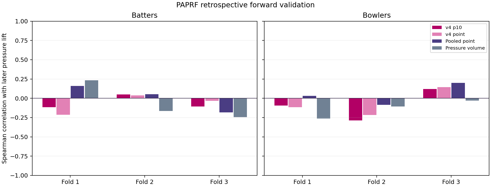

Super Selector · Round 1 research
Ultimate Top 10
Batters and bowlers ranked within their roles. Select a player to see the calculation.
Pressure by innings and phase
Share of retained delivery events within each phase.
Explore the pressure evidence →
Coverage and delivery counts
What the research found
The original Round 1 analysis measures how players respond to elevated match pressure relative to their typical performance. The contextual study asks a broader question: how much do players exceed expectations for their deployment and opponents?
Repeated pressure-ranking tests showed weak ordering over time. Contextual opener scores held up better in both tested windows. Treat the lists as historical evidence with quantified limitations.
- Verify data
- Rebuild match state
- Estimate context
- Score within roles
- Validate ranks
Dataset explorer
The organiser supplies IPL and T20I data from 2022 onward. This explorer summarises raw-file coverage and blank fields. Scoring uses the retained delivery population after exclusions.
01 / CONTEXTUAL LEADERBOARDS
Batting and bowling top tens
Compare modelling assumptions
Framework and formulas
Follow the contextual index from a pre-delivery forecast to the final 0–100 score. The pressure-only and validation equations follow.
Pressure and validation equations ↓ · Full formula reference ↗
- Organiser CSVs
Audit IDs, extras and legal balls - Pre-delivery state
Reconstruct chase and pressure - Contextual residuals
Estimate outcomes from earlier dates - Seven role evaluations
Score within deployment - Unified index
Normalise and add bounded role credit
Batting and bowling use different scoring directions. Scoring rates and boundaries count positively for batters. Run and boundary prevention count positively for bowlers. Dismissals and wickets carry role-specific weights.
Expected outcome and residual
A is the earlier context’s outcome total over n opportunities and μ is its parent mean. Opponent and team effects use earlier residuals, shrunk with 120 and 360 opportunities respectively. An observed run against a prediction of 0.8 leaves a residual of +0.2 runs.
Role components and reference
Each x is a player’s mean outcome residual. Peers in the same role supply the mean and sample spread. The sign d favours runs and boundaries for batters and prevention for bowlers. Role weights w are listed in the role leaderboards. A zero component spread gives zero; a flat overall role cohort gives Q = 50.
Evidence adjustment and final index
The most-used role within the discipline is primary. Ranking requires at least 60 scored balls and six matches in that role. At 120 balls, a reference of 90 becomes 70. A supported secondary role at 80 with half the primary ball count adds 1.5 points. Select a player in the top ten to see the same steps with actual inputs.
Does the ranking hold up?

03 / PRESSURE RESEARCH
Match-adjusted pressure rankings
Why players left the previous top ten
Cell support and temporal sensitivity
Forward validation against simpler benchmarks
Each test uses later matches and peer scales fitted before the cutoff. Correlations use the common player pool. The chance column is the expected overlap for two independent random top tens from that pool.
Repeatability across interleaved match halves
Whole matches are split within competition family and year. The displayed ranges are percentiles over split assignments. The shuffle comparison breaks player pairing within exposure groups.
The research score is the 10th percentile of matched scores across valid match-bootstrap draws. The 10th–90th percentile range describes variation conditional on the observed support.
04 / CONTEXTUAL PERFORMANCE
Role leaderboards
Distribution of eligible role scores
Bars count eligible player-role records in signed role-score intervals. This distribution uses the shrunk contextual scores shown in the role table, before the 0–100 discipline transformation.
Later-match validation
Correlations compare earlier ordering with later runs and dismissals or wickets on common eligible players. Top-ten resampling shares describe the historical sample.
Role scores compare outcomes against earlier-date expectations for similar contexts. The India check tests a 1.5× opportunity weight. The primary ranking gives both location groups equal per-ball weight.
05 / FIGURE ATLAS
Visual evidence
Comparative analysis
Compare historical contextual scores and the contributions that produced them. These values use the selected discipline and a common 100-point reference.
ROUND 1 SUBMISSION
Top 10 under pressure
Choose batters or bowlers, then select a player to compare pressure and ordinary performance. Frozen v1 is the dropdown order in the submission PDF.
| Rank | Player | Score | Pressure balls | Matches | v1 rank |
|---|
Additional sensitivity checks
Matched context and repeatability audit
Matched cells compare the same innings, phase and competition family. Each retained cell needs at least 12 balls on each side. The matched delta weights each cell by its pressure balls.
The time split uses whole matches. Spearman correlation compares ranks among players who qualified in both periods.
MATCH CONTEXT
Pressure exposure
Each row combines an innings and phase. Hover or focus a segment for its numerator, denominator and share.
Choose a band segment to inspect its evidence.
Explore the chase-pressure equation
Hold innings progress and wickets constant, then vary the required run rate. This curve represents the implemented equation, with illustrative inputs.
Pressure and validation equations
Pressure before the ball
Before the ball, ℓ is legal balls completed, w is wickets lost, r is runs required and b is balls remaining. The ordinary band ends at 0.40 and the high band starts at 0.65. At 90 balls, four wickets and a required rate of 12, the chase index is 0.80. Open the interactive curve.
Archived pressure score and matched-cell refinement
In frozen v1, all three signed components receive equal weight. Each context requires 60 opportunities and six matches. The factor uses pressure opportunities n. In v4, a and b are the ordinary and pressure opportunities within a supported cell. The coefficient 12 reduces noisy cell differences toward zero before aggregation.
Rank agreement and conventional rates
Spearman uses common eligible player IDs. Whole-match resampling estimates historical variation; p10 and p90 are the tenth and ninetieth empirical score percentiles. Conventional strike rate and economy are reference metrics with different units from the index.
Which assumptions were tested?
The batting scenario adds early first-innings collapses with three or more wickets lost inside 36 legal balls. The bowling scenario adds chases with 6–24 balls left, at least two wickets in hand and a required rate of 7–12 runs per over.
These are sensitivity settings. The matched-context and repeatability results are in the rankings explorer. Pressure bands describe scoreboard context.
RESEARCH MILESTONES
Project progress
- Data and pressure foundationRecalculated index, phase and band across the retained delivery sample.
- Statistical modellingv4 retains innings, phase and competition family, regularises thin cells, and audits the influence of each outcome component.
- Dashboard and research PDFThe expanded project report includes both top tens, all player score traces, validation tables and the figure atlas.
- Validation and submissionCross-check final deliverables and verify submission labels before release.
Research documentation
Read the full methods and version history, then download the typeset report or its source.
About [AUTHOR_NAME]
PAPRF examines how match pressure and player roles shape T20 performance.
Contact and project links
06 / REFERENCE
Glossary and source limits
The supplied organiser CSVs cover IPL and T20I deliveries during 2022–2026. Outcome attribution and exclusions are documented in the library. Age curves, home-ground advantage and pitch-specific effects require verified data. India and outside-India splits measure the venue-country field.